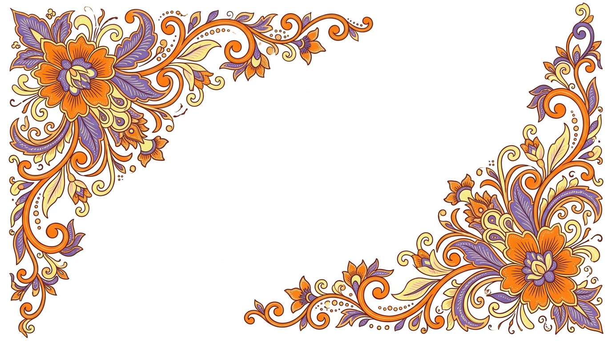
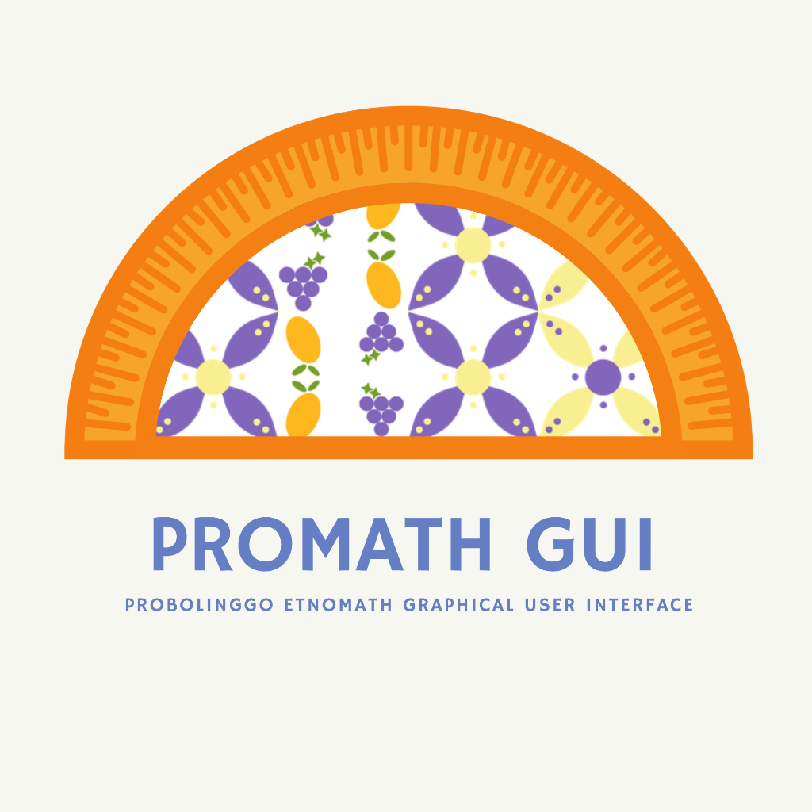
Selamat Datang di PROMATH-GUI!
Jelajahi Indahnya Batik Probolinggo lewat Matematika
Translasi adalah pergeseran semua titik pada suatu bangun datar sejauh jarak dan arah tertentu tanpa mengubah bentuk, ukuran, maupun orientasi bangun tersebut.
Refleksi adalah transformasi yang memindahkan setiap titik dengan sifat bayangan cermin. Jarak titik asal ke garis cermin sama persis dengan jarak bayangan ke garis cermin.
Rotasi adalah perputaran suatu objek terhadap titik pusat tertentu sebesar sudut pusat. Rotasi mengubah arah menghadap/orientasi objek.
Dilatasi adalah transformasi yang memperbesar atau memperkecil ukuran suatu bangun tanpa mengubah bentuknya, berdasarkan titik pusat dan faktor skala k.
Dua bangun dikatakan kongruen jika memiliki bentuk dan ukuran yang sama persis. Sisi-sisi yang bersesuaian sama panjang, dan sudut-sudut bersesuaian sama besar.
Dua bangun dikatakan sebangun jika memiliki bentuk yang sama dan sudut-sudut yang bersesuaian sama besar, tetapi ukurannya berbeda secara proporsional.
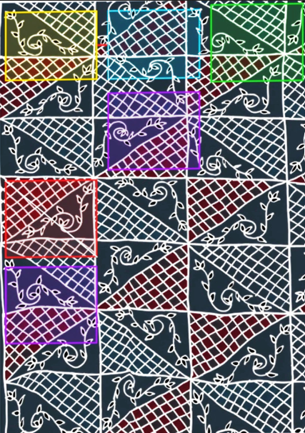
Motif batik Probolinggo yang dianalisis menggunakan highlight warna untuk mengidentifikasi empat jenis transformasi geometri: Translasi (kuning & biru muda), Refleksi (merah), Rotasi (ungu), dan Dilatasi (hijau).
| Warna Highlight | Jenis Transformasi | Penjelasan Penampakan pada Batik |
|---|---|---|
|
Kuning
Biru Muda
|
Translasi (Pergeseran) |
Motif utama dalam kotak (ujung kiri atas) digeser secara horisontal ke kanan sejauh a satuan untuk membentuk unit kotak berikutnya. |
|
Merah
(Garis Putih) |
Refleksi (Pencerminan) |
Di dalam satu modul kotak, area berwarna merah marun bertekstur jaring dicerminkan terhadap garis diagonal (garis sumbu cermin) menghasilkan bentuk simetris berlawanan. |
|
Ungu
|
Rotasi (Perputaran) |
Motif lengkung sulur daun diputar sebesar 180° pada baris berikutnya, sehingga orientasi lengkungan dan posisi daun berbalik arah. |
|
Hijau
|
Dilatasi (Pengukuran Skala) |
Pola kerapatan jala (grid) mengalami perubahan skala rasio ukuran garis kotak diagonal dari bagian dalam ke bagian tepi. |
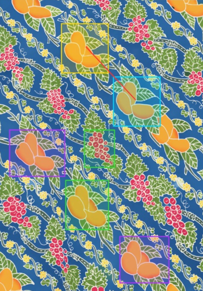
Motif batik mangga Probolinggo dianalisis menggunakan highlight warna untuk mengidentifikasi tiga jenis transformasi geometri: Translasi Diagonal (kuning & biru muda), Rotasi (ungu), dan Dilatasi (hijau).
| Warna Highlight | Jenis Transformasi | Penjelasan Penampakan pada Batik |
|---|---|---|
|
Kuning
Biru Muda
|
Translasi Diagonal (Pergeseran) |
Rangkaian pasang buah mangga oranye berpindah secara sejajar menyusuri garis diagonal garis latar (vektor panah merah) dari kiri atas ke kanan bawah. |
|
Ungu
|
Rotasi (Perputaran Miring) |
Tangkai dan daun mangga mengalami perputaran sudut rotasi sekitar 90° atau 180° sehingga membentuk keseimbangan visual di sepanjang kain. |
|
Hijau
|
Dilatasi (Perubahan Skala Motif) |
Pengrajin menggunakan prinsip dilatasi saat menggambar objek buah mangga berukuran besar berbanding dengan butiran anggur merah dan bunga kuning yang jauh lebih kecil (k < 1). |
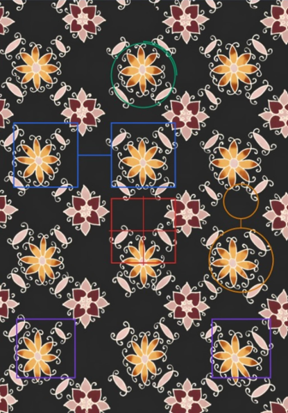
Motif batik bunga Probolinggo dianalisis menggunakan highlight warna untuk mengidentifikasi lima konsep geometri: Translasi (biru), Refleksi (merah), Rotasi (hijau tua), Dilatasi (kuning/oranye), dan Kekongruenan (ungu).
| Warna Highlight | Jenis Transformasi | Penjelasan Penampakan pada Batik |
|---|---|---|
|
Biru
|
Translasi (Pergeseran Motif) |
Motif bunga berwarna kuning-emas diulang sejajar secara horizontal dan vertikal. Posisi Bunga 1 digeser sejauh vektor T(a, 0) untuk menghasilkan Bunga 2 di sebelahnya. |
|
Merah
|
Refleksi (Pencerminan Sumbu Simetri) |
Pada Bunga Merah di bagian tengah, sisi kiri dan kanan merupakan hasil pencerminan terhadap sumbu simetri tegak (vertikal), sedangkan sisi atas dan bawah dicerminkan terhadap sumbu mendatar (horizontal). |
|
Hijau Tua
|
Rotasi (Perputaran Pusat Motif) |
Kelopak bunga tersusun secara melingkar. Satu kelopak diputar sebesar 90° mengelilingi titik pusat bunga untuk membentuk kelopak berikutnya. |
|
Kuning/Oranye
|
Dilatasi & Kesebangunan (Perubahan Ukuran) |
Terlihat perbedaan antara motif bunga kuning yang berukuran besar dengan ornamen bunga kecil di atasnya. Keduanya sebangun karena memiliki bentuk kelopak dan struktur yang serupa, tetapi ukurannya diperkecil dengan faktor skala k < 1. |
|
Ungu
|
Kekongruenan (Persis Sama & Identik) |
Ornamen ukiran lengkung di pojok kiri bawah dan kanan bawah adalah kongruen karena dicetak/dilukis dengan pola, panjang, dan bentuk yang persis identik. |
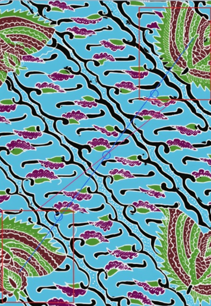
Motif batik gurda (sayap) Probolinggo dianalisis menggunakan highlight warna untuk mengidentifikasi dua jenis transformasi geometri: Rotasi 180° / Refleksi (merah) dan Translasi Diagonal (biru).
| Warna Highlight | Jenis Transformasi | Penjelasan Penampakan pada Batik |
|---|---|---|
|
Merah
Merah Muda
|
Rotasi 180° / Refleksi (Transformasi Ornamen Sayap) |
Motif sayap gurda di kanan atas jika diputar 180° terhadap titik pusat bidang kain batik akan menghasilkan posisi dan orientasi motif sayap di kiri bawah. |
|
Biru
|
Translasi Diagonal (Translasi Sepanjang Garis Miring) |
Pola daun-daun kecil dan sulur berulang secara konsisten mengikuti pola garis lurus diagonal. Hal ini menerapkan translasi berulang T(a, b). |
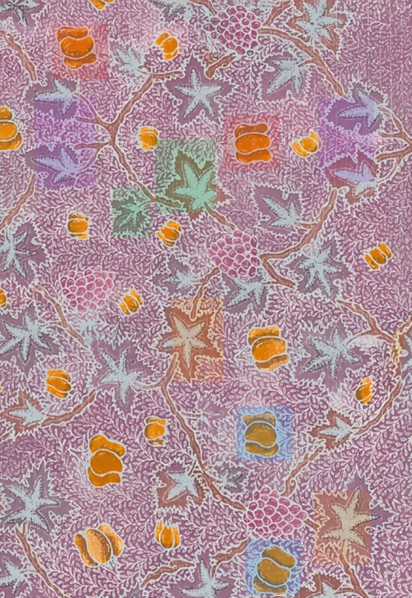
Motif batik daun Probolinggo dianalisis menggunakan highlight warna untuk mengidentifikasi enam konsep geometri: Translasi (merah), Refleksi (ungu), Rotasi (oranye), Dilatasi (hijau), Kekongruenan (biru muda), dan Kesebangunan (hijau).
| Konsep Geometri | Warna Highlight | Bagian Motif Batik yang Dihighlight |
|---|---|---|
| Translasi (Pergeseran) |
Merah
|
Pengulangan motif bunga oranye dari Translasi A ke Translasi B tanpa merubah bentuk & arah. |
| Refleksi (Pencerminan) |
Ungu
|
Susunan simetris daun/pucuk di kiri dan kanan dahan utama (seperti cermin). |
| Rotasi (Perutaran) |
Oranye
|
Perputaran posisi daun abu-abu bertanduk pada sudut tertentu (Rotasi 1 vs Rotasi 2). |
| Dilatasi (Skala) |
Hijau
|
Pembesaran/pengecilan daun (Daun Besar vs Daun Kecil). |
| Kekongruenan |
Biru Muda
|
Dua motif bunga oranye yang persis sama ukuran dan bentuknya (Kongruen 1 & 2). |
| Kesebangunan |
Hijau
|
Dua motif daun dengan bentuk serupa namun proporsi ukurannya berbeda. |
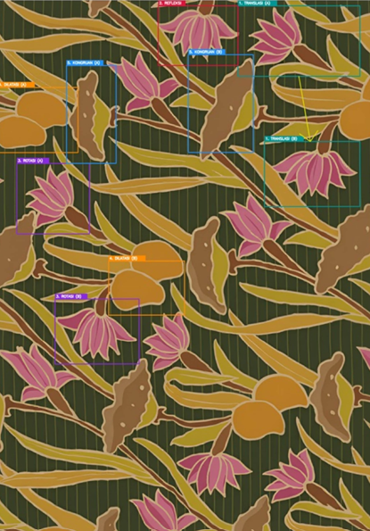
Motif batik teratai Probolinggo dianalisis menggunakan highlight warna untuk mengidentifikasi enam konsep geometri: Translasi (kuning), Refleksi (merah), Rotasi (ungu), Dilatasi (oranye), Kekongruenan (hijau tua), dan Kesebangunan (hijau).
| Kolom Highlight | Materi yang Sesuai | Penjelasan Materi & Konsep Matematika | Bagian / Penunjukan pada Gambar Batik |
|---|---|---|---|
| 1. TRANSLASI | Translasi (Pergeseran) |
Pergeseran objek sejauh vektor T(a,b). Bentuk, ukuran, dan arah objek tetap sama. P(x,y) → P'(x+a, y+b) |
Motif bunga pink di kotak TRANSLASI (A) digeser ke posisi TRANSLASI (B) di kanan bawah dengan bentuk dan arah yang sejajar. |
| 2. REFLEKSI | Refleksi (Pencerminan) |
Pencerminan terhadap garis cermin. Kelopak bunga bagian kanan merupakan bayangan cermin dari kelopak bagian kiri. (x,y) → (-x,y) |
Mahkota bunga pink pada kotak REFLEKSI memiliki simetri lipat vertikal (cermin tegak lurus di tengah bunga). |
| 3. ROTASI | Rotasi (Perputaran) |
Perputaran posisi sebesar sudut θ terhadap titik pusat. Orientasi bunga berubah arah. (x,y) → (-y,x) |
Motif bunga pink pada ROTASI (A) menghadap ke atas-kiri, diputar sebesar ±90° pada ROTASI (B) sehingga menghadap ke bawah-kiri. |
| 4. DILATASI | Dilatasi (Perkalian Ukuran) |
Perubahan ukuran objek dengan faktor skala k. P(x,y) → P'(kx, ky) |
Pasangan motif buah kuning oval pada DILATASI (A) berukuran lebih besar dibanding pasangannya pada DILATASI (B). |
| 5. KONGRUAN | Kekongruenan (≅) |
Dua bangun memiliki bentuk dan ukuran yang sama persis (rasio ukuran 1:1). | Elemen daun/kelopak cokelat bergerigi pada KONGRUAN (A) dan KONGRUAN (B) sama persis baik bentuk maupun ukurannya. |
| 6. SEBANGUN | Kesebangunan (~) |
Dua bangun memiliki bentuk sama dengan perbandingan panjang sisi-sisi bersesuaian bernilai senilai/proporsional. | Motif buah kuning oval besar (A) dan kecil (B) memiliki bentuk geometri yang sama persis tetapi ukurannya proporsional. |
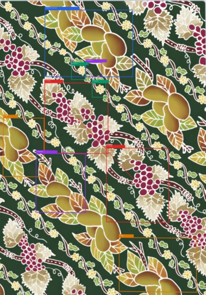
Motif batik anggur Probolinggo dianalisis menggunakan highlight warna untuk mengidentifikasi lima konsep geometri: Translasi (merah), Refleksi (biru), Rotasi (oranye), Dilatasi (ungu), dan Kekongruenan (hijau).
| Highlight & Kode | Materi Matematika | Penjelasan Materi | Bagian Gambar yang Sesuai |
|---|---|---|---|
| 1A & 1B (Merah) | Translasi | Memindahkan motif sejauh arah diagonal tanpa mengubah bentuk, ukuran, atau orientasinya. | Rangkaian buah anggur merah beserta daunnya diulang dan digeser sejajar sepanjang sulur diagonal. |
| 2 (Biru) | Refleksi | Posisi elemen dibuat simetris terhadap sumbu pencerminan cermin imajiner. | Pasangan daun dan kelompok buah mangga di bagian atas yang posisinya saling berhadapan/mencermin. |
| 3A & 3B (Oranye) | Rotasi | Memutar posisi dan arah motif sebesar sudut tertentu (misal 180°) sehingga arah tangkai berbalik. | Rumpun motif mangga di kiri bawah (3A) berorientasi ke atas, sedangkan di kanan bawah (3B) berputar ke bawah. |
| 4A & 4B (Ungu) | Dilatasi | Pengubahan skala ukuran motif dengan faktor skala k (faktor perbesaran/perkecilan). | Perbandingan elemen bentuk bunga kecil (4A) dengan elemen motif kelompok mangga besar (4B). |
| 5A & 5B (Hijau) | Kekongruenan (≅) |
Dua atau lebih objek geometri yang identik sama persis dalam bentuk dan ukurannya. | Bunga-bunga kecil berwarna kuning yang berulang di sepanjang garis sulur cokelat memiliki ukuran dan bentuk yang sama. |
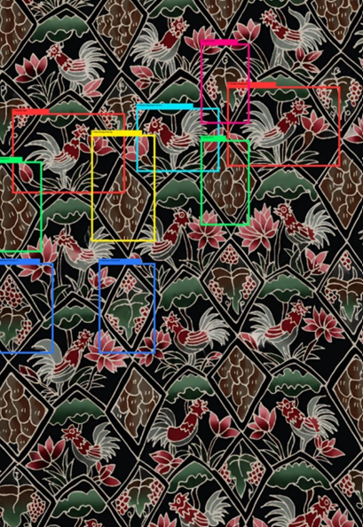
Motif batik ayam Probolinggo dianalisis menggunakan highlight warna untuk mengidentifikasi enam konsep geometri: Translasi (merah), Refleksi (cyan), Rotasi (kuning), Dilatasi (pink), Kekongruenan (hijau), dan Kesebangunan (biru).
| Highlight Warna Area | Materi Matematika | Penjelasan Materi yang Terkait | Bagian / Letak pada Gambar Batik |
|---|---|---|---|
| Highlight Merah | Translasi (Pergeseran) |
Memindahkan titik/objek sepanjang garis lurus dengan arah dan jarak tertentu. Rumus: P(x, y) T(a,b) → P'(x + a, y + b) |
1. Translasi (Asal & Pergeseran): Motif Ayam Jantan & Bunga di kotak kiri bawah digeser searah vektor translasi menuju posisi kanan atas. |
| Highlight Cyan | Refleksi (Pencerminan) |
Memindahkan objek dengan sifat cermin datar. Jarak objek ke cermin sama dengan jarak bayangan ke cermin. Rumus (Sumbu-Y): P(x, y) → P'(-x, y) |
2. Refleksi: Motif Ayam Jantan yang berhadapan (satu menghadap kanan dan satu menghadap kiri) terpisah oleh garis cermin vertikal. |
| Highlight Kuning | Rotasi (Perputaran) |
Memutar objek sejauh sudut θ terhadap titik pusat tertentu. Rumus (90°): P(x, y) → P'(-y, x) |
3. Rotasi: Frame/Bingkai berbentuk Belah Ketupat Miring yang diputar membentuk kisi jajaran kisi batik teratur. |
| Highlight Pink | Dilatasi (Perkalian Skala) |
Mengubah ukuran objek (memperbesar/memperkecil) dengan faktor skala k tanpa mengubah bentuk. Rumus: P(x, y) [O, k] → P'(kx, ky) |
4. Dilatasi: Perbandingan antara bingkai belah ketupat motif utama yang besar dengan belah ketupat aksen yang kecil di selang-selingnya. |
| Highlight Hijau | Kekongruenan (≅) |
Dua bangun dikatakan kongruen jika memiliki bentuk dan ukuran yang persis sama serta sudut bersesuaian sama besar. | 5. Kekongruenan: Motif Belah Ketupat bertekstur serat kayu (Kongruen A & B) yang diulang dengan ukuran dan bentuk seragam. |
| Highlight Biru | Kesebangunan (~) |
Dua bangun dikatakan sebangun jika bentuknya sama, sudut bersesuaian sama besar, tetapi ukurannya proporsional. | 6. Kesebangunan: Motif ornamen Daun/Anggur pada belah ketupat sedang yang serupa dengan ornamen pada belah ketupat besar. |
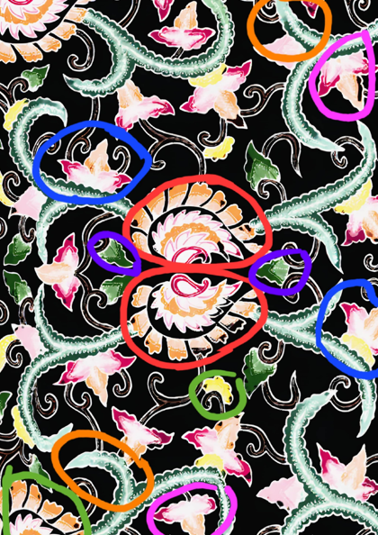
Motif batik kupu-kupu & sulur Probolinggo dianalisis menggunakan highlight warna untuk mengidentifikasi enam konsep geometri: Refleksi (merah), Translasi (biru), Rotasi (oranye), Dilatasi (hijau), Kekongruenan (ungu), dan Kesebangunan (pink).
| Materi Geometri | Bagian Batik (Highlight) | Penjelasan Konsep & Rumus |
|---|---|---|
| REFLEKSI Pencerminan |
Garis & Kotak Merah: Bunga mahkota krem-oranye di tengah bagian atas dicerminkan terhadap garis tengah horizontal ke bagian bawah. | Memindahkan titik dengan sifat bayangan cermin. Jarak objek ke cermin sama dengan jarak bayangan ke cermin. P(x,y) → Sumbu X → P'(x, -y) |
| TRANSLASI Pergeseran |
Kotak & Garis Biru: Bunga merah muda di posisi kiri atas digeser sejauh garis panah menuju posisi kanan bawah. | Memindahkan semua titik sejauh jarak dan arah tertentu. Bentuk, ukuran, dan orientasi tetap. (x', y') = (x + a, b) |
| ROTASI Perputaran |
Lingkaran Oranye: Sulur daun hijau bergelombang di pojok kanan atas diputar 180° menuju ke pojok kiri bawah. | Memutar titik-titik sejauh sudut θ terhadap titik pusat O(0,0). Rotasi 180°: P(x,y) → P'(-x, -y) |
| DILATASI Perkalian Skala |
Kotak Hijau (Bawah): Bunga krem kecil di bawah tengah diperbesar (perkalian skala k > 1) menjadi motif bunga krem di pojok kiri bawah. | Mengubah ukuran (memperbesar/memperkecil) tanpa mengubah bentuk dasar objek. [O, k] : P(x,y) → P'(kx, ky) |
| KEKONGRUENAN Sama & Sebangun |
Lingkaran Ungu: Daun hijau kecil di kanan tengah dan kiri tengah yang memiliki ukuran dan bentuk 100% persis sama. | Dua bangun datar yang memiliki bentuk dan ukuran persis sama, bersesuaian sama besar, bersesuaian sama panjang. |
| KESEBANGUNAN Bentuk Serupa |
Lingkaran Pink: Kupu-kupu besar di sisi kanan atas dan kupu-kupu kecil di sisi kiri bawah memiliki bentuk serupa namun ukuran berbeda. | Dua bangun datar yang memiliki bentuk sama dengan sudut-sudut bersesuaian sama besar, tetapi panjang sisi-sisi bersesuaian proporsional. |
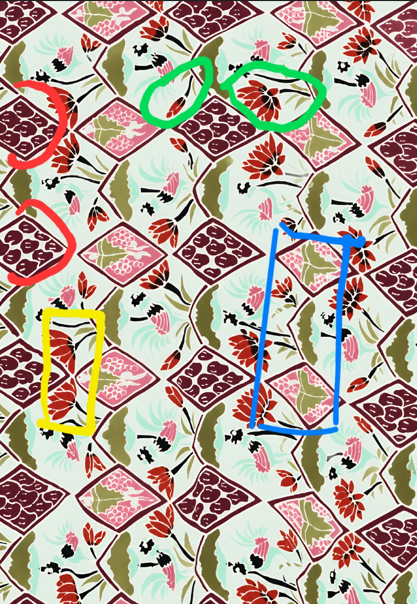
Motif batik ketupat Probolinggo dianalisis menggunakan highlight warna untuk mengidentifikasi empat kelompok konsep geometri: Translasi & Kekongruenan (merah), Refleksi & Rotasi (kuning), Dilatasi & Kesebangunan (hijau), dan Translasi & Geometri Bidang (biru).
| Highlight Area | Materi Matematika | Penjelasan pada Motif Batik |
|---|---|---|
| Highlight MERAH Elemen Belah Ketupat Marun Berulang |
Translasi & Kekongruenan | Motif belah ketupat berwarna marun yang berisi pola bintik-bintik digeser (ditranslasikan) secara berulang ke arah diagonal dan vertikal. Karena bentuk dan ukurannya persis sama, elemen-elemen ini juga memenuhi syarat kekongruenan. |
| Highlight KUNING Motif Bunga Merah |
Refleksi (Pencerminan) & Rotasi | Kelopak bunga merah memiliki susunan simetris kiri-kanan terhadap sumbu tegak (refleksi). Selain itu, susunan kelopak mengelilingi titik pusat menunjukkan konsep rotasi perputaran sudut. |
| Highlight HIJAU Pola Bunga Besar vs Bunga Kecil / Kuncup |
Dilatasi & Kesebangunan | Pengulangan bentuk bunga dari ukuran mekar (besar) hingga ukuran kuncup/kecil merupakan contoh dilatasi (perubahan skala). Bentuknya memiliki proporsi sudut yang sama sehingga tergolong sebangun. |
| Highlight BIRU Bingkai Lengkung Latar Belakang |
Translasi & Geometri Bidang | Belah ketupat berwarna pink yang diulang secara konstan dengan pola pergeseran (translasi) sejajar. |
(Translasi & Refleksi)
Objek Batik: Unit ornamen dasar Mangga dan Anggur khas Probolinggo
Target Konsep: Translasi T(a,b) dan Refleksi terhadap sumbu koordinat
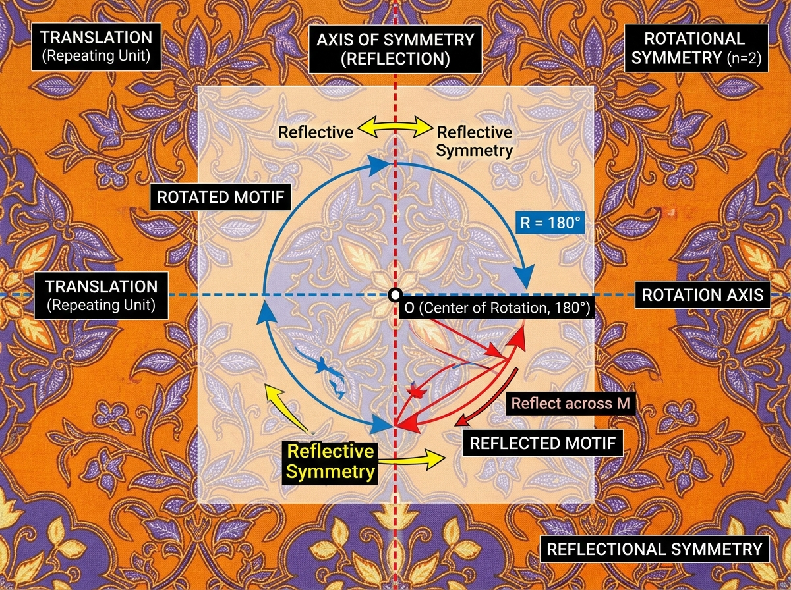
Latihan Soal yang disertai dengan gambar
| Tantangan | Percobaan | Skor Terakhir | Waktu Terakhir |
|---|